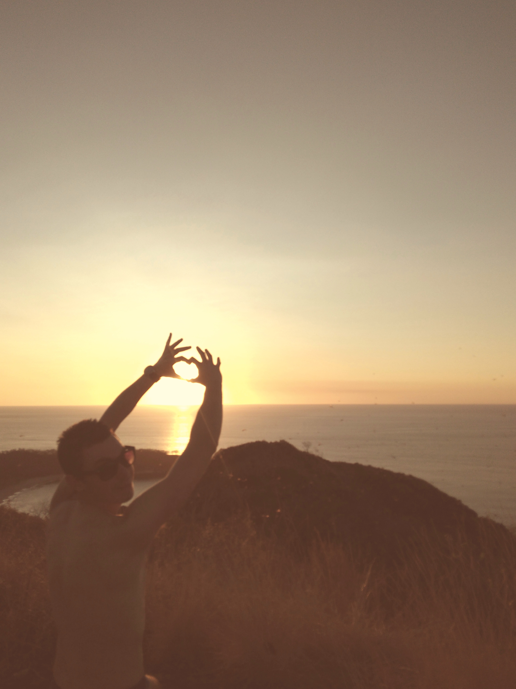
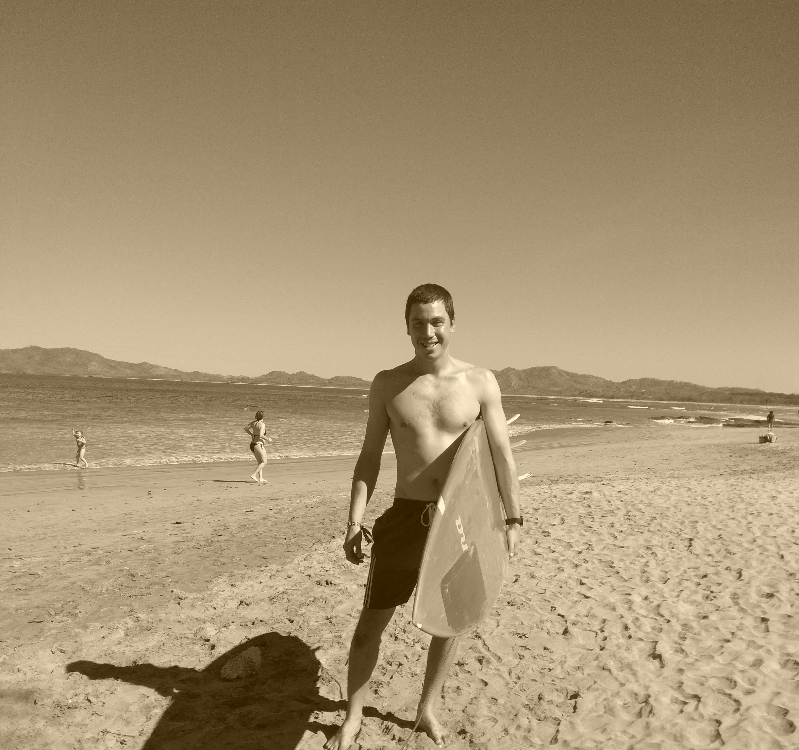
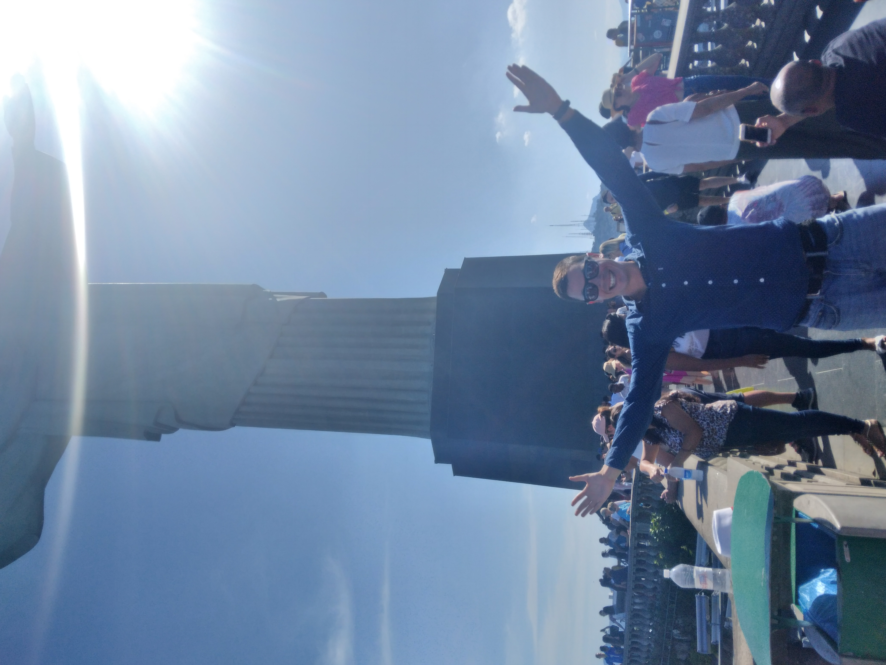

THE DILEMMA OF LIFE
There is always something that we crave for and
this is called freedom. But there is a catch here. There isn't
really freedom and most people dont see the wave and
instead of that they clearly see the ocean.
Below I am refering to the real freedom and not the one that they
advertise in the USA. Government and Media are very manipulative
nowadays and they have to understand that in order to get to the
real freedom a lot of sacrifices need to be done and still we won't
be able to reach our destination. Below i will give you some
examples of how we can be free of worries without getting into the
trap of believing that money and freedom go together by devouring
our free time for the sake of money.
Time and money are not the best allies.
- We choose what we want to become. No excuses.
-
No one can interfere with our inner peace but only those who we let
them come into our life without any warning.
-
Lets admit it. Life is not easy. Its never gonna be easy, and for
some individuals its completely unfair. But remember: We came into
this world in order to bring joy and peace to others.
-
Nothing in this world has a meaning unless the meaning that we give
it.
-
If you want to be unstoppable, start questioning yourself and
challenge your own reality in a way where you gonna transform your
own thinking.


